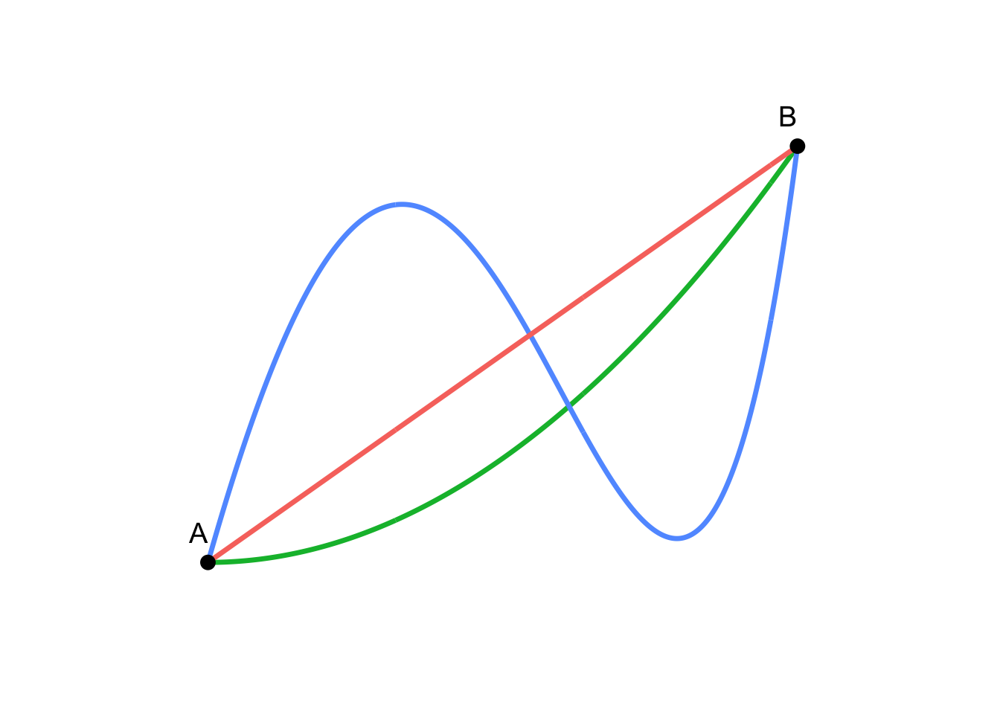
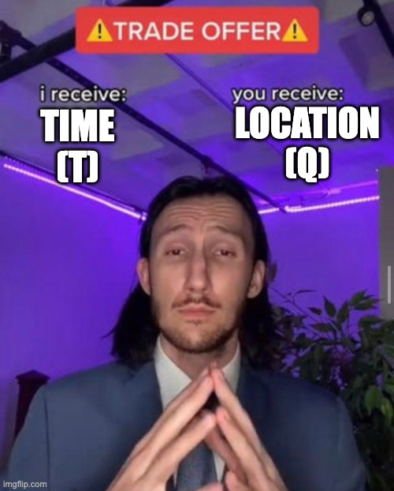
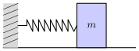
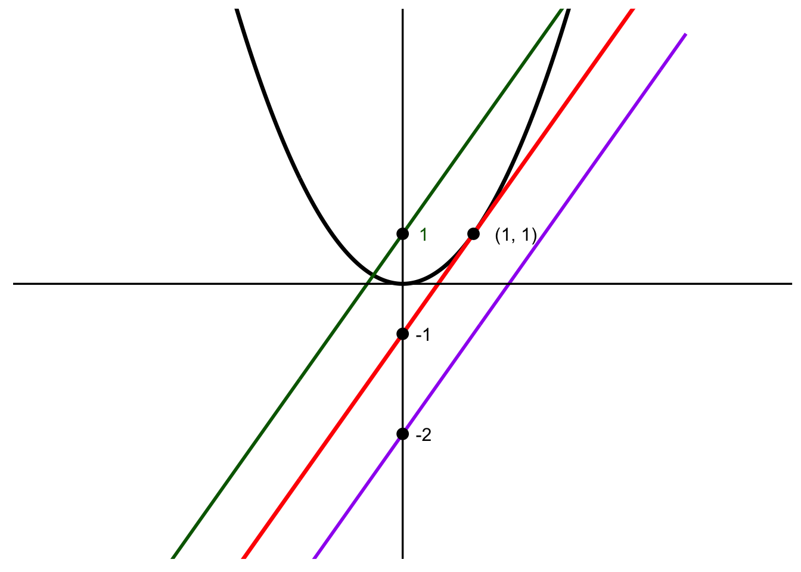
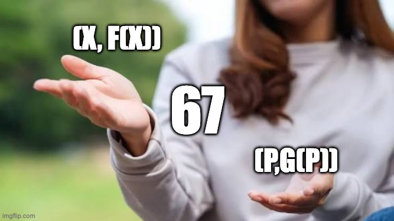

Warning
Disclaimer: Notational abuse is part of the cultural milieu of physics. In keeping with tradition, many such abuses include but are not exclusive to:
- Both vector notations \(\vec{x}\) and \(x_i\) will be used interchangeably.
- Sometimes the indicies will be dropped \(q_i\) and \(q\) are equivalent.
- The following represents an inner product: \(p_i q_i\)
1 What is Classical Mechanics?
At the heart of mechanics is the question: how do things move?
Here we explore the world before the advent of quantum mechanics, where things are quite deterministic. The goal, in this case, is then to find the “Equation of Motion” that describes an object. This sketches out the path of an object through time. It is a basic trade: you give me a time, and can give you a position.
Mathematically represented: \[ \vec{q} (t) \]
Meme-ically represented:

1.1 The Newtonian Method
Newton provided us with a (theoretically) complete way of solving this problem. Accord to the second law: \[ \sum \vec{F} = m\vec{a} = m\ddot{\vec{q}} \]
If the following quantities are known:
- The mass of the object \(m\).
- The sum of all forces that act on that object \(\sum \vec{F}\).
- Some initial conditions on the position \(\vec{q}(t_0)\) and velocity \(\dot{\vec{q}}(t_0)\).
Then I can, in principle, give you a second order Ordinary Differential Equation (ODE) to solve to find \(\vec{q}(t)\).
Let’s consider the practical (canonical) example of a mass on a spring1:

Here we assume the only forces that don’t cancel out are caused by the spring, so Hooke’s law is the sum of all forces: \[ \sum \vec{F} = -k \vec{q} \]
Using Newton’s Second Law:
\[ m\ddot{\vec{q}} + k \vec{q} = 0 \]
If we solve this with some initial conditions on the position and velocity, we can find the Equation of Motion.
1.2 Limitations of the Newtonian Method
Newton provided a complete and conceptually simple method to solve classical mechanics problems (assuming you can solve the resulting ODE). In reality, actually using this method to arrive at the ODE can be quite complex. Some difficult questions that arises include:
- How do we handle constrains (eg. ball on a string)?
- How about changes in coordinates?
- How do we deal with more complex non-pointlike objects?
- What happens if we aren’t able to explicity define all the forces?
In the following sections we propose the Lagrangian and Hamiltonian formulations as alternatives that address some of the issues above. This is nice! However, more importantly, Lagrange and Hamilton provide us with a language that is foundational to how we eventually talk about quantum mechanics and quantum field theory.
2 Lagrangian Mechanics
In the Newtonian world, we considered forces to solve a geometric problem. In the Lagrangian (and Hamlitonian) world, we need to consider energy to solve an analytical problem. We are essentially transforming this into an optimisation problem, but we are getting ahead of ourselves.
2.1 Tangent I: The Calculus of Variation
Before we dive into Lagrangian mechanics, we introduce the Calculus of Variations, a field of mathematics that is concerned with paths and trajectories. Let’s consider a basic question: Which of the following lines gives you the shortest path from \(A\) to \(B\)?
It might be pretty obvious the red one is the shortest, but lets build out a more formal way establishing this. In Euclidean spaces, for the function \(y(t)\), the length of a path is given by: \[ \lambda = \int_{t_A}^{t_B} \sqrt{1+\dot{y}(t)^2}dt \]
where \(\dot{y}(t)\) is the slope of the path. We didn’t really say anything about \(y(t)\) yet. Suppose \(y(t)\) crosses the point \(A\) at \(t=t_A\) and \(B\) at \(t = t_B\). Of course there are infinitely many paths that satisfy this condition. We want to choose the one that minimises \(\lambda\) which turns out to be the red path.
We have just converted our geometric problem into an optimisation problem.
2.1.1 The Action and Lagrangian
We have seen how we can convert a specific geometry problem into an analytics problem. Let’s generalise that even further. Let \(S\) be a functional called the Action.
Tip
A functional is a function that takes a function as an input and returns a scalar.
Let \(S\) also be defined by its integrand \(L\) which we will call the Lagrangian: \[ S[y] = \int_{t_A}^{t_B} L(t, y(t), \dot{y}(t)) dt \]
This is a general case of our path length example from before. We can return to that case if we set the Lagrangian \(L = \sqrt{1+\dot{y}(t)^2}\), then \(S\) becomes the path length \(\lambda\).
Here we make another definition. Let the Stationary Path be the path \(y(t)\) that extremises the action \(S\).
Tip
When we consider a function \(f(x)\), the extrema occurs when \(f'(x)=0\). What about functionals? Going back to first principles, the derivative can be found by perturbing \(x\) slightly, and then finding no difference in \(y\) value (\(\Delta y = 0\)). In a similar way, we perturb the path \(L\) slightly, and we find the difference in the action \(S\). Importantly, the end points of the path cannot be perturbed.
We construct a slightly perturbed path \(\tilde{y}(t)=y(t) + \varepsilon \eta(t)\) where \(\varepsilon>0\). The action of the perturbed path is defined as \(\delta S\). Then the stationary path is given by \(y(t)\) such that: \[ \frac{d}{d\varepsilon} S\left[y(t) + \varepsilon \eta(t) \right] \Big|_{\varepsilon=0} =0 \]
2.1.2 The Euler Lagrange Equations
Let’s evaluate this: \[ \begin{align} \delta S &= \frac{d}{d\varepsilon} \int_{t_A}^{t_B} L(t, \tilde{y}(t), \dot{\tilde{y}}(t)) dt \\ &= \int_{t_A}^{t_B} \frac{d}{d\varepsilon} L(t, \tilde{y}(t), \dot{\tilde{y}}(t)) dt \quad \textrm{(Leibniz's Rule)} \\ &= \int_{t_A}^{t_B} \left(\frac{\partial L}{\partial t}\frac{dt}{d\varepsilon} + \frac{\partial L}{\partial \tilde{y}}\frac{d\tilde{y}}{d\varepsilon} + \frac{\partial L}{\partial \dot{\tilde{y}}}\frac{d\dot{\tilde{y}}}{d\varepsilon} \right)dt \\ &= \int_{t_A}^{t_B} \left(\cancel{\frac{\partial L}{\partial t}(0)} + \frac{\partial L}{\partial \tilde{y}}\eta(t) + \frac{\partial L}{\partial \dot{\tilde{y}}}\dot{\eta}(t) \right)dt \quad \textrm{($t$ is independent of $\varepsilon$)} \\ &= \int_{t_A}^{t_B} \frac{\partial L}{\partial \tilde{y}}\eta(t) + \frac{\partial L}{\partial \dot{\tilde{y}}}\dot{\eta}(t)dt \\ &= \int_{t_A}^{t_B} \frac{\partial L}{\partial y}\eta(t) + \frac{\partial L}{\partial \dot{y}}\dot{\eta}(t)dt \\ \end{align} \] In the final line, we have used the fact that as \(\varepsilon \to 0\), \(\tilde{y} \to y\) and \(\dot{\tilde{y}} \to \dot{y}\). For the right term, we integrate by parts: \[ \begin{align} \int_{t_A}^{t_B} \frac{\partial L}{\partial \dot{y}}\dot{\eta}(t)dt &= \left[\frac{\partial L}{\partial \dot{y}} \eta(t) \right]_{t_A}^{t_B} - \int_{t_A}^{t_B} \eta(t) \frac{d}{dt} \left(\frac{\partial L}{\partial \dot{y}} \right) dt \\ &= -\int_{t_A}^{t_B} \eta(t) \frac{d}{dt} \left(\frac{\partial L}{\partial \dot{y}} \right) dt \end{align} \] At the end points \(t_A\) and \(t_B\), \(\eta(t)\) vanishes since they are unperturbed. This gives: \[ \begin{align} \delta S &= \int_{t_A}^{t_B} \eta(t)\frac{\partial L}{\partial y} - \eta(t) \frac{d}{dt} \left(\frac{\partial L}{\partial \dot{y}} \right)dt = 0 \\ &\implies \frac{\partial L}{\partial y} - \frac{d}{dt} \left(\frac{\partial L}{\partial \dot{y}} \right) = 0 \end{align} \] Where we required the integrand to be zero. \(\eta=0\) is a trivial solution, which leave us with the final line. This is the Euler-Lagrange equation.
Let’s unpack what we have done. We have shown that for a given Lagrangian \(L\), the stationary path can be calculated by the Euler-Lagrange equation. That is, if you give me a Lagrangian, I can give you at least an ODE that describes the stationary path.
2.1.3 Principle of Least Action
We are almost there. The principle of least action states that if you set the Lagrangian appropriately (we will discuss what this means later), then the actual path an object takes, is just the stationary path. This is why we worked so hard to get an ODE out of the stationary path.
But this is actually profound - why does the stationary path give the actual path? Without going down the path of quantum mechanics, it is difficult to answer this question. After all what is there ontologically about a particular action that intuitively gives you a link to the equation of motion?
Whatever the reason may be, this is the bridge. This is why we care about stationary path in the first place, because if you give me the right Lagrangian, I can give you a way to the equation of motion. The best part is I haven’t specified any forces or geometries, so this method works even if we can’t explicitly state the forces or have strange coordinates we’re working in.
2.2 Applying Lagrangian Formulation
So what is the correct Lagrangian for classical mechanics? It turns out the following applies for classical mechanics problems2: \[ L = T-V = \frac{1}{2}m\dot{q}^2 - V(q) \]
So it is the difference between the kinetic energy of a system and the potential energy of a system. Why this is the case is deep and profound3. We can apply the Euler-Lagrange Equation: \[ \begin{align} \frac{\partial L}{\partial q} &= - \nabla V(q) \\ \frac{d}{dt} \left(\frac{\partial L}{\partial \dot{y}} \right) &= \frac{d}{dt} \left(m\dot{q} \right) = m\ddot{q} \\ \therefore m\ddot{q} &= - \nabla V(q) = F \end{align} \]
This is precisely Newton’s second law.
Tip
Notice I’ve snuck in \(F = - \nabla V(q)\) in here. This is actually an amazingly profound statement. Let’s think about this for a second… \(V(q)\) is a scalar field here that represents the potential. For example if we had gravitational potential energy, then \(V= mgh\). \(\nabla V(q)\) is a vector field that tells you both the direction and magnitude of the greatest/least slope.
What is this actually saying? This is saying that the potential (energy) of a system depends on the configuration - where you are situated. This makes sense because if you were on a hill, then you will have a higher potential than if you were in a valley.
Now pretend you are a ball on a scalar potential field. If the field is sloped, you will have a tendancy to ‘roll’ down the hill in the direction of the greatest slope. Mathematically this is precisely described by the vector field \(- \nabla V(q)\)! And the sign is negative because you tend to move away from a high (positive) gradient.
So all \(F = - \nabla V(q)\) is saying is that if you live in the potential \(V\), you’ll experience a ‘force’ that follows the direction and magnitude of the steepest slope downwards. Exactly as what you expect a ball on a field would do.
If we go back to our spring example, we can plug in the potential \(\frac{1}{2} k q^2\): \[ \begin{align} \therefore m\ddot{q} &= - \nabla V(q) = \frac{\partial}{\partial q} \left(\frac{1}{2} k q^2 \right) \\ &= - kq \end{align} \]
Recovering exactly what we found from the Newtonian formulation.
3 Hamiltonian Mechanics
When we introduced the Lagrangian formulation, it provided us a way to find the equation of motion without having to explicitly state our forces or be particularly careful about our choice of coordinates. In fact, most mechanics problems can be solved more easily via Lagrange than Newton, although you lose some of the conceptual simplicity.
This next step in going to the Hamiltonian formulation will not be as explicitly profitable, but it is quite foundational:
- For classical mechanics, the ideas of conservation and symmetry become more explicit via Noether’s theorem.
- For quantum mechanics, this is the basis for the canonical quantisation of classical fields.
3.1 Tangent II: Legendre Transforms and Conjugate Spaces
In mathematics it is often useful to transform a given function \(f(x)\) into another function. We make a transformation because we think it may be easier to understand or manipulate the transformed function.
The Legendre Transformation allows us to translate the function \(f(x)\) into a function of the gradient \(g(p)\) where \(p=f'(x)\). Unless we define \(g(p)\) it can really be anything. But for this to be a Legendre Transform, we want to make sure the congugate function \(g(p)\) doesn’t actually lose any information about \(f(x)\). This can be done by encoding the original function into a set of its own tangent lines.
In this section, we’re going to explain how to do this. In the next section, when we re-introduce the physics context, we will explore why the conjugate space is quite a nice space to work with.
In summary (you can just think of “Tangent Space” and “Cotangent Space” as simple labels for now):
| Original (Tangent) Space | Conjugate (Cotangent) Space | |
|---|---|---|
| \(x/p\) | x-value | Gradient of \(f(x)\) and also the tangent line |
| \(f(x)/g(p)\) | y-value | y-intercept of the tangent line |
3.1.1 Legendre Transformation of a Univariant Function
First, let’s impose some constraints on \(f(x)\):
- \(f(x)\) needs to be differentiable - you need to be able to calculate the gradient in the first place.
- \(f(x)\) needs to be convex - this ensures for each tangent line, it uniquely represents only one value of \(x\).
We need to get a function \(g(p)\) that depends on the slope of \(f(x)\) without losing any information. Let’s consider some specific slope \(p\). We can draw a bunch of lines with this slope: \[ l(X) = pX + c \] We opt to use \(X\) here to distinguish \(x\) as the independent variable of \(f(x)\). Let’s consider an example. Suppose \(f(x)=x^2\), and we choose to draw all the lines with \(p=1\). This would look something like this:

Out of all the possible values of \(c\), only one of them defines the Tangent Line. In our case \(c=-1\). How do we find this more generally? The function \(l(X)\) intersect with \(f(x)\):
- Multiple times when \(c\) is high.
- No times when \(c\) is low.
- Exactly one time when \(c\) is the value such that \(l(X)\) is the tangent line.
When these curves intersect we can write down: \[ f(x) = px + c \] If we re-arrange, we find: \[ c = f(x)-px \] We need to find the lowest possible value of \(c\) for the tangent line, which is the same as maximising \(g=-c\). So for a given slope \(p\), for the line \(l(X)\) to form a tangent line, we must have \(g(p)\): \[ g(p) = \sup_{x} (px-f(x)) \] Geometrically since \(c\) is just the \(y\) intercept, \(g\) is just the negative \(y\) intercept. Since \(f(x)\) is convex, we find: \[ \begin{align} g(p) &= \sup_{x} (px-f(x)) = px(p) - f(x(p)) \\ &= px - f(x) \end{align} \] We call this function the Legendre Transformation. We have generated a function \(g(p)\) which preserves information geometrically. If you give me a set of slopes and (negative) \(y\) intercept of tangent lines, each one uniquely defines one point in the curve. So we have essentially established a one-to-one mapping between: \[ (x,f(x)) \to (p,g(p)) \]
In other words:

3.1.2 Legendre Transformation for Multivariant Functions
For a differentiable and convex multivariant function \(f(x,y)\), the partial derivative with respect to \(x\) is: \[p_x = \partial_x f(x,y)\].
The Legendre Transformation along the \(x\) direction becomes: \[ g(p,y) = p_x x - f(x,y) \]
3.2 The Hamiltonian
Now we are ready to get back into physics. We define the generalised momentum as: \[ p_i=\frac{\partial L}{\partial \dot{q}_i} \]
If we make the mapping \(f(x, \cdot) = L(\dot{q}, \cdot )\) and \(g(p, \cdot) = H(p, \cdot)\), then the Legendre Transformation gives: \[ H = p_i \dot{q}_i - L \]
Where \(H\) is the Hamiltonian. For a classical system, this turns out to be the total energy: \[ \begin{align} L &= \frac{1}{2}m \dot{q}_i^2 - U(q_i) \\ p_i &= \frac{\partial L}{\partial \dot{q}_i} = m \dot{q} \\ H &= p_i \dot{q}_i - L = m\dot{q}^2 - \left( \frac{1}{2}m \dot{q}_i^2 - U(q_i) \right) \\ &= \frac{1}{2}m \dot{q}_i^2 + U(q_i) = T(\dot{q}) + U(q_i) \end{align} \]
So why go through all that effort to apply the Legendre Transformation? It turns out the dual/conjugate space to the Lagrangian has very nice properties:
- \(\dot{q}_i\) is the velocity which doesn’t have any conserved quantities. \(p_i\) is the momentum which is conserved.
- The Lagrangian \(T-V\) is weird. The Hamiltonian \(T+V\) gives us the energy which is conserved.
A lot of these will be useful for applying into Noether’s theorem.
3.3 Hamilton Equations
Using the definition of the canonical momentum and Euler-Lagrange equation, we can derive a different approach to finding the equation of motion. From the definition of the Hamiltonian we have: \[ L(q, \dot{q}) + H(q, p) = p_i \dot{q}_i \]
First, let’s take a derivative with respect to \(p\) whilst holding \(q\) constant: \[ \begin{align} \frac{\partial L}{\partial \dot{q}} \frac{\partial \dot{q}}{\partial p} + \frac{\partial H}{\partial p} &= \dot{q} + p \frac{\partial \dot{q}}{\partial p} \\ \cancel{p \frac{\partial \dot{q}}{\partial p}} + \frac{\partial H}{\partial p} &= \dot{q} + \cancel{p \frac{\partial \dot{q}}{\partial p}} \\ \frac{\partial H}{\partial p} &= \dot{q} \end{align} \]
Second, let’s take a derivative with respect to \(q\) whilst holding \(p\) constant:
\[ \begin{align} \frac{\partial L}{\partial q} + \frac{\partial L}{\partial \dot{q}} \frac{\partial \dot{q}}{\partial q} + \frac{\partial H}{\partial q} &= p \frac{\partial \dot{q}}{\partial q} \\ \frac{\partial L}{\partial q} + \cancel{p \frac{\partial \dot{q}}{\partial q}} + \frac{\partial H}{\partial q} &= \cancel{p \frac{\partial \dot{q}}{\partial q}} \\ \frac{\partial L}{\partial q} + \frac{\partial H}{\partial q} &= 0 \\ \frac{d}{dt} \frac{\partial L}{\partial \dot{q}} + \frac{\partial H}{\partial q} &= 0 \\ \frac{dp}{dt} + \frac{\partial H}{\partial q} &= 0 \\ \end{align} \]
This leaves us with the final form of Hamiltonan:
\[ \begin{align} \frac{dq}{dt} &= \frac{\partial H}{\partial p}\\ \frac{dp}{dt} &= - \frac{\partial H}{\partial q} \end{align} \]
So the Hamiltonian approach gives us two independent first-order ODEs (instead of one second-order ODE from the Lagrangian).
4 Putting It Together
Classical mechanics is all about finding the deterministic Equation of Motion \(q(t)\).
Newton provided us a complete, but often not very useful way of doing this. By exploring two mathematical areas:
- Calculus of Variations.
- Legendre Transformations.
We introduced the Lagrangian and Hamiltonian formulations of mechanics.
| Newton | Lagrange | Hamilton | |
|---|---|---|---|
| Main Formula | \(F=ma\) | \(L=T-V\) | \(H=T+V\) |
| Variables | \(F\) | \(q\), \(\dot{q}\) | \(q\), \(p\) (Phase Space) |
| Path to EoM | Newton (Geometry) | Euler-Lagrange (2nd order ODE) | Hamiltonian (pair of 1st order ODE) |
| Best for | Conceptual understanding | Solving complex systems | Extension into advanced theories |